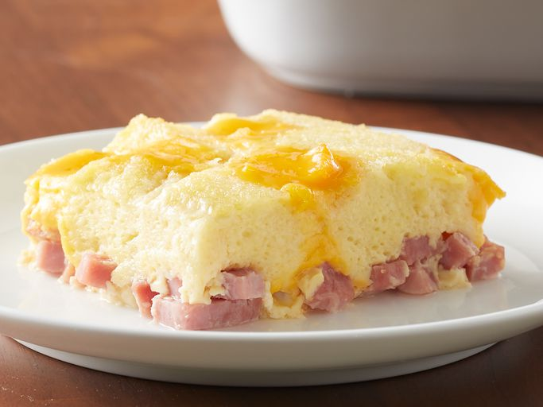

Lasagna Recipe

A wonderful christmas recipe for your christmas spirit!
This is a delicious dish that will satisfy your christmas spirit and can be a wonderful breakfast!
Ingredients
- cooking spray
- 2 cups diced cooked ham
- 2 tablespoons butter, or as needed
- 7 slices bread, crusts removed
- 1/2 pound American cheese, cubed
- 3 cups milk
- 6 eggs, beaten
- 3/4 teaspoon dry mustard
- 3/4 teaspoon salt
Steps
- Gather all ingredients.
- Spray a 9x13-inch casserole dish with cooking spray.
- Spread ham into the bottom of prepared casserole dish. Butter one side of each bread slice; cut slices into cubes. Arrange buttered bread cubes atop ham; layer American cheese over bread cubes.
- Whisk milk, eggs, mustard powder, and salt together in a bowl; pour over American cheese layer. Cover dish with aluminum foil and refrigerate 8 hours or overnight.
- Preheat oven to 350 degrees F (175 degrees C). Remove aluminum foil from casserole.
- Bake in the preheated oven until cheese is melted and eggs are set in the middle, about 1 hour.